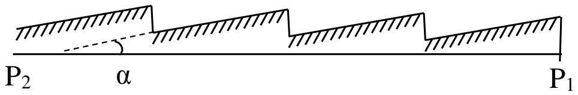

폭이 각각 $a$와 $b$인 두 슬릿을 같은 결맞는(coherent) 단색광 빔으로 비출 때, 두 회절 무늬의 중앙 극대 세기의 비를 구하라.
동일한 슬릿들이 같은 간격으로 늘어서 이루어진 회절격자(diffraction grating)를 생각하자.
두 상보적인(complementary) 회절격자(둘 다 같은 격자 상수 $l$, 즉 한 슬릿의 중심에서 이웃 슬릿의 중심까지의 거리를 가지며, 슬릿 폭은 각각 $a$와 $l-a$이다)로 얻은 1차 주극대(main maxima)의 세기 사이에는 어떤 관계가 있는가? 두 회절격자는 같은 결맞는 단색광 빔으로 비춘다고 간주한다.
동일한 슬릿들이 같은 간격으로 늘어서 이루어진 회절격자의 경우, 회절된 빛의 세기 $I_{dif}$가 격자에 입사하는 빛의 세기의 4분의 1을 넘지 않음을 증명하라. 격자의 밝기(brightness)가 최대가 되도록 $I_{dif}=I_{inc}/4$가 되는 조건은 무엇인가? (여기서 $I_{dif}$는 0차 극대를 제외한 모든 극대에서 회절된 빛의 세기이다.)
밝기가 더 좋은, 즉 $I_{dif}>I_{inc}/4$인 격자는 블레이즈(blazed, 반사형) 격자이며, 여기서 각 홈(groove)의 면은 격자면 $\text{P}_1\text{P}_2$와 각 $\alpha$를 이룬다(그림 참조).

파장 $\lambda_0=500\ \text{nm}$에 대해 입사 빔 방향으로 1차 극대를 만들고, 이 극대가 회절 무늬에서 가장 밝은 극대가 되는, $n=2000$ 홈/mm인 격자에 대해 이 각을 구하라.
(d)의 격자를 단색화 장치(monochromator)에 사용하는데, 여기서 회절 스펙트럼은 곡률 반지름 $R=1\ \text{m}$인 오목 거울에 의해 출구 슬릿 위에 투영된다.
단색화 장치를 백색광으로 비추고, 슬릿의 폭이 $d=20\ \mu\text{m}$, 중심 파장이 $\lambda_0=500\ \text{nm}$일 때, 단색화 장치에서 나오는 빔의 스펙트럼 폭 $\Delta\lambda$와 결맞음 길이(coherence length)를 구하라. 그 수치를 계산하라.
(d)의 격자를 사용하여 여전히 분해할 수 있는 두 단색 복사 사이의 최소 스펙트럼 간격은 얼마인가? 격자의 길이는 10 cm이고, 스펙트럼은 (e)의 거울로 200 픽셀/mm인 CCD 검출기 위에 투영된다.
참고. 슬릿과 격자에 대한 수직 입사는 a., b., c.에서만 고려한다. 평행광에서의 회절을 고려한다.
출제
Dr. Marian Băzăvan, Faculty of Physics, University of Bucharest, Romania
회절각 $\theta$에 따른 전기장 세기의 분포는 다음 관계식(프라운호퍼형 회절, Fraunhofer type diffraction)으로 주어진다.
여기서 $k$는 파동 벡터의 크기이다. 이 경우 빛의 세기 분포는
이고, 이로부터
를 얻는다.
두 격자에 대해 전기장으로 나타낸 회절 무늬는 각각
\[E_a(\theta)=\sum_m\int_{ml}^{ml+a}Ce^{i(\omega t-kx\sin\theta)}dx\]그리고
이다. 두 장 분포를 더하면 구멍(가림막)이 없는 것과 같은 장 분포를 얻는다.
1차 주극대는 기하학적 그림자 안에 생기므로
이고
이다.
슬릿 폭이 $a$와 $l-a$인 두 격자는 $I_{dif\,a}=I_{dif\,l-a}$를 가지며, 따라서 1차 주극대의 세기는 같다. (이는 바비네 원리(Babinet principle)로부터 나온다. 즉, 상보적인 구멍에 대한 바비네 원리에 따르면 기하학적 그림자 안에서 빛의 세기 분포는 같다.)
같은 입사 빔으로 비춘 상보적인 격자(b 참조)도 함께 생각하자. 이 경우 다음 관계식들이 성립한다.
1., 2., 3.으로부터
를 얻는다.
최댓값은 $a=l/2$일 때 나타나며, 이로부터 $I_{dif\,max}=\dfrac14I_{incident}$이다. 0.2 + 0.3 pt
이 격자는 순수한 진폭 격자(amplitude grating)이므로, 슬릿 하나에 해당하는 회절 극대가 0차 주극대와 겹치게 된다.
이 문제를 피하려면 격자가 입사파의 위상을 주기적으로 변화시켜야 한다(위상 격자, phase gratings). 실제로는 주로 반사 격자를 사용하며, 그 홈의 면은 격자면에 대해 기울어져 있다. 즉 “블레이즈 격자(blazed gratings)”이다.
$m=1$이고 $i=\alpha$(최대 세기)일 때
스펙트럼 범위의 폭 $\Delta\lambda$는
결맞음 길이는 간섭무늬가 더 이상 관찰되지 않는 광학적 경로차이다.
스펙트럼 범위 $[\lambda_o-\Delta\lambda/2;\ \lambda_o+\Delta\lambda/2]$, 즉 $[\nu_o-\Delta\nu/2;\ \nu_o+\Delta\nu/2]$의 복사로 비춘 두 빔 간섭계(two-beam interferometer)에서 세기 분포는
\[I=\int_{\nu_o-\Delta\nu/2}^{\nu_o+\Delta\nu/2}2\frac{I_o}{\Delta\nu}\left(1+\cos\frac{2\pi\nu}{c}L\right)d\nu=2\frac{I_o}{\Delta\nu}\left(\nu+\frac{\sin\dfrac{2\pi\nu}{c}L}{\dfrac{2\pi}{c}L}\right)\Bigg|_{\nu_o-\Delta\nu/2}^{\nu_o+\Delta\nu/2}\]이다. 무늬의 가시도(fringe visibility)는
이고, 여기서 $L$은 간섭하는 파동들에 해당하는 광학적 경로차이다. 무늬가 처음으로 사라지는 것은 다음 조건에서이다.
1차에서의 분해능(resolution power)은
이다. 그러면 격자로 분해할 수 있는 가장 작은 간격은 $\delta\lambda=0.025\ \text{Å}$이다. 0.2 pt
행렬 검출기(matrix detector)의 관점에서 보면, 최소 스펙트럼 간격은 이웃한 두 픽셀 사이의 거리 1 mm/200 픽셀 = 5 μm에 의해 제한된다.
따라서 분광기가 분해하는 최소 스펙트럼 간격은 0.043 Å이다. 0.3 pt